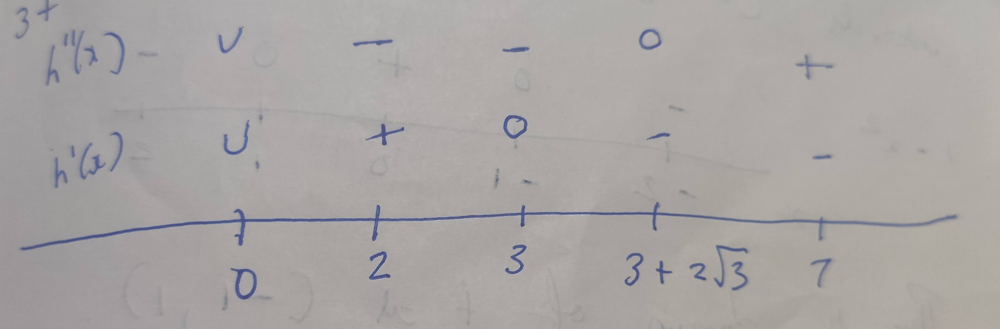
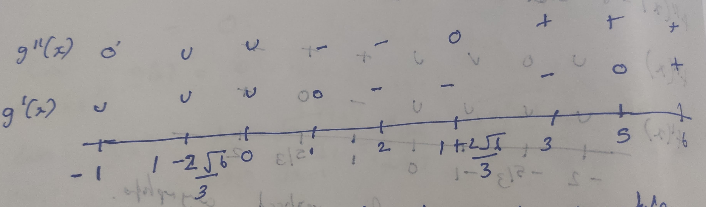

1 Sophisticated Graphing
1.1 Solution 1
\(f(x) = \dfrac{2x - 1}{x^2}\)
\(f(x)\) is undefined at \(x=0\)
Domain: \((-\infty, 0) \cup (0, \infty)\)
clear pkg load symbolic syms x f = (2*x-1)*x^(-2) df = simplify(diff(f,x)) dff = simplify(diff(df,x))
octave> octave> f = (sym)
2⋅x - 1
───────
2
x
octave> df = (sym)
2⋅(1 - x)
─────────
3
x
dff = (sym)
2⋅(2⋅x - 3)
───────────
4
x
Both \(f'(x)\) and \(f''(x)\) are undefined at \(x=0\). \(f'(x) = 0\) when \(x=1\). \(f''(x) = 0\) when \(x = 3/2\)
Let's check the function for vertical asymptotes
\(\lim_{x \to 0^-} f(x) = - \infty\)
\(\lim_{x \to 0^+} f(x) = - \infty\)
So \(x = 0\) is the vertical asymptotes. Let's check the function for horizontal asymptotes.
\(\lim_{x \to \pm \infty} f(x) = \lim_{x \to \pm \infty} \dfrac{2x-1}{x^2} = \lim_{x \to \pm \infty} \dfrac{x(2 - 1/x}{x^2}\)
\(= \lim_{x \to \pm \infty} \dfrac{1}{x}(2 - \dfrac{1}{x}) = 0.2 = 0\)
So \(y = 0\) is the horizontal asymptote.
set terminal png notransparent nointerlace rounded font "Alegreya, 14" reset session set xlabel "x" set ylabel "f(x)" set grid set key right top f(x) = (2*x - 1) / (x**2) set yrange [-5:5] set xrange [-5:5] set label "I" at 1.5, f(1.5) center point pointtype 7 pointsize 2 offset 1 set label "C" at 1, f(1) center point pointtype 6 pointsize 2 offset -2 plot (x > 0 ? f(x) : 1/0) ls 1 t "2x-1/x^2", (x < 0 ? f(x) : 1/0) ls 1 t "", 0 with lines ls 2 t "asymptote"
C = Critical number
I = Inflection point
1.2 Solution 2
\(g(x) = \dfrac{2}{x^2} = \dfrac{1}{x}\)
\(g(x)\) is undefined at \(x = 0\)
Domain: \((-\infty, 0) \cup (0 , \infty)\)
clear pkg load symbolic syms x g = 2/(x^2) - 1/x dg = simplify(diff(g,x)) dgg = simplify(diff(dg, x))
octave> octave> g = (sym)
1 2
- ─ + ──
x 2
x
dg = (sym)
x - 4
─────
3
x
dgg = (sym)
2⋅(6 - x)
─────────
4
x
Both \(g'(x)\) and \(g''(x)\) are undefined at \(x=0\).
\(g'(x) = 0\) when \(x = 4\)
\(g''(x) = 0\) when \(x = 6\)
Let's check the function for vertical asymptotes
\(\lim_{x \to 0^-} g(x) = \lim_{x \to 0^-} \dfrac{1}{x}(2/x - 1) = -\infty\)
\(\lim_{x \to 0^+} g(x) = \infty\)
So \(x = 0\) is a vertical asymptote.
\(\lim_{x \to \pm \infty} g(x) = \lim_{x \to \pm \infty} g(x) \dfrac{2}{x^2} - \dfrac{1}{x} = 0 - 0 = 0\)
So \(y = 0\) is the horizontal asymptote.
Inflection point: 6
Critical number: 4
set terminal png notransparent nointerlace rounded font "Alegreya, 14" reset session set xlabel "x" set ylabel "g(x)" set grid set key right top g(x) = (2/(x**2)) - (1/x) set yrange [-1:8] set xrange [-5:10] set label "I" at 6, g(6) left point pointtype 7 pointsize 2 offset 1 set label "C" at 4, g(4) center point pointtype 6 pointsize 2 offset -1 plot (x > 0 ? g(x) : 1/0) ls 1 t "2/x^2 - 1/x", (x < 0 ? g(x) : 1/0) ls 1 t "" , 0 with lines ls 2 t "asymptote"
1.3 Solution 3
\(f(x) = \dfrac{x}{4-x^2}\)
\(f(x)\) is undefined at \(x=2, -2\)
Domain: \((-\infty, 2) \cup (-2,2) \cup (2, \infty)\)
clear pkg load symbolic syms x f = x/(4-x^2) df = simplify(diff(f,x)) dff = simplify(diff(df,x))
octave> octave> f = (sym)
x
──────
2
4 - x
octave> df = (sym)
2
x + 4
─────────
2
⎛ 2 ⎞
⎝x - 4⎠
dff = (sym)
⎛ 2 ⎞
-2⋅x⋅⎝x + 12⎠
───────────────
3
⎛ 2 ⎞
⎝x - 4⎠
Both \(f'(x)\) and \(f''(x)\) are undefined at \(x = 2, -2\). \(f'(x) = 0\) when \(x = \emptyset\)
\(f''(x) = 0\) when \(x=0\)
Inflection point: 0
Let's check the function for vertical asymptotes:
\(\lim_{x \to -2^-} f(x) = \lim_{x \to -2^-} \dfrac{x}{x^2(4/x^2 - 1)} = \infty\)
\(\lim_{x \to -2^+} f(x) = -\infty\)
\(\lim_{x \to 2^-} f(x) = \infty\)
\(\lim_{x \to 2^+} f(x) = -\infty\)
So \(x=2\) and \(x=-2\) are the vertical asymptotes for the function. Let's check the function for horizontal asymptotes:
\(\lim_{x \to \pm \infty} f(x) = \lim_{x \tp \pm \infty} \dfrac{1}{4/x - x} = 0\)
So \(y = 0\) is the horizontal symptote
set terminal png notransparent nointerlace rounded font "Alegreya, 14" reset session set xlabel "x" set ylabel "f(x)" set grid set key right top f(x) = (x/(4 - x**2)) set yrange [-3:3] set xrange [-5:5] set label "I" at 0, f(0) center point pointtype 7 pointsize 2 offset -2 plot (x < -2 ? f(x) : 1/0) ls 1 t "x/(4-x^2)", (x < 2 ? f(x) : 1/0) ls 1 t "" , (x > 2 ? f(x) : 1/0) ls 1 t "", 0 with lines ls 2 t "asymptote"
1.4 Solution 4
\(g(x) = \dfrac{x^2}{4-x^2}\)
\(g(x)\) is undefined at \(x=2,-2\)
Domain: \((-\infty, -2) \cup (-2,2) \cup (2, \infty)\)
clear pkg load symbolic syms x g = x^2/(4-x^2) dg = simplify(diff(g,x)) dgg = simplify(diff(dg, x))
octave> octave> g = (sym)
2
x
──────
2
4 - x
octave> dg = (sym)
8⋅x
─────────
2
⎛ 2 ⎞
⎝x - 4⎠
dgg = (sym)
⎛ 2 ⎞
-⎝24⋅x + 32⎠
──────────────
3
⎛ 2 ⎞
⎝x - 4⎠
Both \(g'(x)\) and \(g''(x)\) are undefined at \(x=2, -2\). \(g'(x) = 0\) when \(x=0\). \(g''(x) = 0\) when \(x = \emptyset\)
Let's check the function for vertical asymptotes:
\(\lim_{x \to -2^-} g(x) = -\infty\)
\(\lim_{x \to -2^+} g(x) = \infty\)
\(\lim_{x \to 2^-} g(x) = \infty\)
\(\lim_{x \to 2^+} g(x) = -\infty\)
So \(x = 2\) and \(x = -2\) are the vertical asymptotes.
\(\lim_{x \to \pm \infty} g(x) = \lim_{x \to \pm \infty} \dfrac{1}{4/x^2 - 1} = \dfrac{1}{0-1} = -1\)
So \(y = -1\) is the horizontal asymptote.
set terminal png notransparent nointerlace rounded font "Alegreya, 14" reset session set xlabel "x" set ylabel "f(x)" set grid set key right top f(x) = (x**2/(4 - x**2)) set yrange [-3:3] set xrange [-5:5] set label "C" at 0, f(0) center point pointtype 7 pointsize 2 offset -2 plot (x < -2 ? f(x) : 1/0) ls 1 t "x^2/(4-x^2)", (x < 2 ? f(x) : 1/0) ls 1 t "" , (x > 2 ? f(x) : 1/0) ls 1 t "", -1 with lines ls 2 t "asymptote"
function y = firstDerivative(x) num = 8 * x; den = (4-x^2)^2; y = num / den; end ans = [firstDerivative(-1), firstDerivative(-3), firstDerivative(1), firstDerivative(3)]
| -0.8888888888888888 | -0.96 | 0.8888888888888888 | 0.96 |
function y = secondDerivative(x) num = 24*(x^2) + 32 den = (4-x^2)^3 y = num / den; end ans = [secondDerivative(-3), secondDerivative(-1), secondDerivative(0), secondDerivative(1), secondDerivative(3)]
| -1.984 | 2.074074074074074 | 0.5 | 2.074074074074074 | -1.984 |
1.5 Solution 5
\(f(x)= \dfrac{x^3 +2}{x}\)
\(f(x)\) is undefined at \(x=0\)
Domain: \((-\infty, 0) \cup (0, \infty)\)
clear pkg load symbolic syms x f = (x^3 + 2)/x df = simplify(diff(f,x)) dff = simplify(diff(df,x))
octave> octave> f = (sym)
3
x + 2
──────
x
octave> df = (sym)
2
2⋅x - ──
2
x
dff = (sym)
4
2 + ──
3
x
Both \(f'(x)\) and \(f''(x)\) are undefined at \(x=0\). \(f'(x) = 0\) when \(x = 1\). \(f''(x) = 0\) when \(x = -(2)^{1/3}\)
function y = firstDerivative(x) num = 2*x^3 - 2 den = x^2 y = num / den; end ans = [firstDerivative(-2), firstDerivative(-1.25), firstDerivative(-1), firstDerivative(1), firstDerivative(2)]
| -4.5 | -3.78 | -4 | 0 | 3.5 |
function y = secondDerivative(x) num = 2*x^3 + 4 den = x^3 y = num / den; end ans = [secondDerivative(-2), secondDerivative(-1), secondDerivative(1), secondDerivative(2)]
| 1.5 | -2 | 6 | 2.5 |
Let's check the function for vertical asymptotes
\(\lim_{x \to 0^-} f(x) = -\infty\)
\(\lim_{x \to 0^+} f(x) = \infty\)
So \(x = 0\) is the vertical asymptotes.
\(\lim_{x \to \pm \infty} f(x) = \lim_{x \to \pm \infty} \dfrac{1 + 2/x^3}{1/x^2} = \infty\)
So there is no horizontal asymptotes.
set terminal png notransparent nointerlace rounded font "Alegreya, 14" reset session set xlabel "x" set ylabel "f(x)" set grid set key right top f(x) = (x**3 + 2)/x set yrange [-10:10] set xrange [-5:5] set label "C" at 1, f(1) center point pointtype 7 pointsize 2 offset -2 set label "I" at -1.25, f(-1.25) center point pointtype 7 pointsize 2 offset -2 plot (x < 0 ? f(x) : 1/0) ls 1 t "x^3 + 2/x", (x > 0 ? f(x) : 1/0) ls 1 t ""
1.6 Solution 6
\(g(x) = x + 4/x\)
\(g(x)\) is undefined at \(x = 0\)
Domain: \((-\infty, 0) \cup (0, \infty)\)
clear pkg load symbolic syms x g = x + (4/x) dg = simplify(diff(g,x)) dgg = simplify(diff(dg, x))
octave> octave> g = (sym)
4
x + ─
x
octave> dg = (sym)
4
1 - ──
2
x
dgg = (sym)
8
──
3
x
Both \(g'(x)\) and \(g''(x)\) are undefined at \(x = 0\). \(g'(x) = 0\) when \(x = -2, 2\). \(g''(x) = 0\) when \(x = \emptyset\)
function y = firstDerivative(x) num = 4 den = x^2 y = 1 - (num / den); end ans = [firstDerivative(-3), firstDerivative(-2), firstDerivative(-1), firstDerivative(1), firstDerivative(3)]
| 0.5555555555555556 | 0 | -3 | -3 | 0.5555555555555556 |
function y = secondDerivative(x) den = x^3 y = 8 / den; end ans = [secondDerivative(-3), secondDerivative(-2), secondDerivative(-1), secondDerivative(1), secondDerivative(2), secondDerivative(3) ]
| -0.2962962962962963 | -1 | -8 | 8 | 1 | 0.2962962962962963 |
Let's check the function for vertical asymptotes.
\(\lim_{x \to 0^-} g(x) = -\infty\)
\(\lim_{x \to 0^+} g(x) = \infty\)
So \(x = 0\) is the vertical asymptote.
\(\lim_{x \to \pm \infty} g(x) = \pm \infty\)
So there is no horizontal asymptote.
set terminal png notransparent nointerlace rounded font "Alegreya, 14" reset session set xlabel "x" set ylabel "g(x)" set grid set key right top g(x) = x + (4/x) set yrange [-20:20] set xrange [-5:5] set label "C" at -2, g(-2) left point pointtype 7 pointsize 2 offset -2 set label "C" at 2, g(2) left point pointtype 7 pointsize 2 offset -2 plot (x < 0 ? g(x) : 1/0) ls 1 t "x + 4/x", (x > 0 ? g(x) : 1/0) ls 1 t ""
1.7 Solution 7
\(f(x) = \dfrac{x^2 + x + 2}{x-1}\)
\(f(x)\) is undefined at \(x = 1\)
Domain: \((-\infty, 1) \cup (1, \infty)\)
clear pkg load symbolic syms x f = (x^2 + x + 2)/(x-1) df = simplify(diff(f,x)) dff = simplify(diff(df,x))
octave> octave> f = (sym)
2
x + x + 2
──────────
x - 1
octave> df = (sym)
2
x - 2⋅x - 3
────────────
2
x - 2⋅x + 1
dff = (sym)
8⋅(x - 1)
───────────────
2
⎛ 2 ⎞
⎝x - 2⋅x + 1⎠
Both \(f'(x)\) and \(f''(x)\) are undefined at \(x=1\). \(f'(x) = 0\) when \(x = -1, 3\). \(f''(x) = 0\) when \(x = \emptyset\)
function y = firstDerivative(x) num = x^2 - (2*x) - 3 den = (x-1)^2 y = num / den; end ans = [firstDerivative(-2), firstDerivative(-1), firstDerivative(0), firstDerivative(2), firstDerivative(4)]
| 0.5555555555555556 | 0 | -3 | -3 | 0.5555555555555556 |
function y = secondDerivative(x) den = (x-1)^3; y = 8 / den; end ans = [secondDerivative(-2), secondDerivative(-1), secondDerivative(0), secondDerivative(2), secondDerivative(3), secondDerivative(4) ]
| -0.2962962962962963 | -1 | -8 | 8 | 1 | 0.2962962962962963 |
Let's check the function for vertical asymptotes:
\(\lim_{x \to 1^-} f(x) = -\infty\)
\(\lim_{x \to 1^+} f(x) = \infty\)
So \(x = 1\) is the vertical asymptote.
\(\lim_{x \to \pm \infty} f(x) = \lim_{x \to \pm \infty} \dfrac{x(1 + 1/x + 2/x^2}{(1/x - 1/x^2} = \pm \infty\)
So there is no horizontal asymptote.
set terminal png notransparent nointerlace rounded font "Alegreya, 14" reset session set xlabel "x" set ylabel "f(x)" set grid set key right top f(x) = (x**2 + x + 2)/(x-1) set yrange [-20:20] set xrange [-2:4] set label "C" at -1, f(-1) left point pointtype 7 pointsize 2 offset -2 set label "C" at 3, f(3) left point pointtype 7 pointsize 2 offset -2 plot (x < 1 ? f(x) : 1/0) ls 1 t "x + 4/x", (x > 1 ? f(x) : 1/0) ls 1 t ""
1.8 Solution 8
\(h(x) = \dfrac{\sqrt{x}}{x+3}\)
Domain of \(\sqrt{3}\) is \([0, \infty)\)
\(h(x)\) is not defined when \(x = -3\)
Domain of \(h(x)\) is \([0, \infty)\)
clear pkg load symbolic syms x h = sqrt(x)/(x+3) dh = simplify(diff(h,x)) dhh = simplify(diff(dh,x))
octave> octave> h = (sym)
√x
─────
x + 3
octave> dh = (sym)
3 - x
─────────────
2
2⋅√x⋅(x + 3)
dhh = (sym)
⎛ 2 ⎞
3⋅⎝x - 6⋅x - 3⎠
──────────────────────────────
3/2 ⎛ 3 2 ⎞
4⋅x ⋅⎝x + 9⋅x + 27⋅x + 27⎠
\(h'(x)\) is not defined when \(x = 0\). \(h''(x)\) is not defined when \(x = 0\). \(h'(x) = 0\) when \(x = 3\). \(h''(x) = 0\) when \(x = 3 + 2\sqrt{3}\)

function y = firstDerivative(x) num = 3 - x den = 2 * sqrt(x) * (x+3)^2 y = num / den; end ans = [firstDerivative(2), firstDerivative(3), firstDerivative(3 + (2*sqrt(3))), firstDerivative(7)]
| 0.01414213562373095 | 0 | -0.007605849903976696 | -0.007559289460184544 |
function y = secondDerivative(x) num = 3*(x * (x-6) - 3) den = 4*((x+3)^3)*(x^(1.5)) y = num / den; end ans = [secondDerivative(2), secondDerivative(3), secondDerivative(7)]
| -0.02333452377915607 | -0.008018753738744801 | 0.0001619847741468117 |
Let's check the function for vertical asymptotes. There is no element \(x\) where \(h(x)\) is undefined in its domain. So it has no vertical asymptote.
\(\lim_{x \to \pm \infty} h(x) = \lim_{x \to \pm \infty} \dfrac{1}{\sqrt{x} + 3/\sqrt{x}} = 0\)
So \(y = 0\) is the horizontal asymptote.
set terminal png notransparent nointerlace rounded font "Alegreya, 14" reset session set xlabel "x" set ylabel "h(x)" set grid set key right top h(x) = sqrt(x)/(x+3) set xrange [-1:7] set yrange [0:0.35] set label "I" at 6.464101, h(6.464101) left point pointtype 7 pointsize 2 offset -2 set label "C" at 3, h(3) left point pointtype 7 pointsize 2 offset -2 plot (x > 0 ? h(x) : 1/0) ls 1 t "x^(1/2)/x+3", 0 ls 2 t "asymptote"
1.9 Solution 9
\(f(x) = \dfrac{x+1}{\sqrt{1-x^2}}\)
In order for \(f(x)\) to be defined, we must have \(1 - x^2 > 0\). To solve this inequality we first determine when \(1 - x^2 = 0\)
\(1 - x^2 = (1-x)(1+2) = 0\)
\(x = 1, -1\)
Now let's check the sample points in the intervals \((-\infty, -1), (-1,1), (1,\infty)\)
Thus the domain of \(f\) is \((-1,1)\)
clear pkg load symbolic syms x f = (x+1)/sqrt(1-x^2) df = simplify(diff(f,x)) dff = simplify(diff(df,x))
octave> octave> f = (sym)
x + 1
───────────
________
╱ 2
╲╱ 1 - x
octave> df = (sym)
-1
───────────────────
________
╱ 2
╲╱ 1 - x ⋅(x - 1)
dff = (sym)
2
- x - x⋅(x - 1) + 1
────────────────────
3/2
⎛ 2⎞ 2
⎝1 - x ⎠ ⋅(x - 1)
Both \(f'(x)\) and \(f''(x)\) are undefined at \(x = 1, -1\)
function y = firstDerivative(x) num = 1 den = (1-x)*sqrt(1-(x^2)) y = num / den; end ans = [firstDerivative(0), firstDerivative(0.5), firstDerivative(-0.5), firstDerivative(-0.6)]
| 1 | 2.309401076758503 | 0.769800358919501 | 0.7812499999999999 |
function y = secondDerivative(x) num = (2*x + 1)*(1+x) den = (1 - (x^2))^(5/2) y = num / den; end ans = [secondDerivative(0), secondDerivative(-0.3), secondDerivative(-0.6), secondDerivative(0.5)]
| 1 | 0.3544496489338692 | -0.2441406249999999 | 6.158402871356008 |
\(f'(x) = 0\) when \(x = \emptyset\)
\(f''(x) = 0\) when \(x = -1/2\)
Let's check the function for vertical asymptotes
$limx → -1^+ f(x) = \(\lim_{x \to -1^+} \dfrac{x(1+1/x)}{x\sqrt{1/x^2 - 1}} = \dfrac{1-1}{-1\sqrt{-1 - 1}} = -\)
\(\lim_{x \to -1^-} f(x) = 0\)
\(\lim_{x \to 1^+} f(x) = \dfrac{1+1}{1(1-1)} = \infty\)
\(\lim_{x \to 1^-} f(x) = \infty\)
So \(x=1\) are vertical asymptotes
\(\lim_{x \to \infty} f(x) = \dfrac{1+1}{\sqrt{-2}} = -i\)
\(\lim_{x \to -\infty} f(x) = \lim_{x \to -\infty} \sqrt{\dfrac{(1+x)^2}{(1-x^2)}} = \lim_{x \to -\infty} \sqrt{\dfrac{1+x}{1-x}}\)
\(= \lim_{x \to -\infty} \sqrt{\dfrac{0+1}{0-1}} = \sqrt{-1} = i\)
set terminal png notransparent nointerlace rounded font "Alegreya, 14" reset session set xlabel "x" set ylabel "f(x)" set grid set key right top f(x) = (x+1)/sqrt(1-(x**2)) set xrange [-1:1] set yrange [-1:6] set label "I" at -0.5, f(-0.5) left point pointtype 7 pointsize 2 offset -2 plot f(x) ls 1 t "(x+1)/sqrt(1-x^2)"

1.10 Solution 10
\(g(x) = \dfrac{x+1}{\sqrt{x^2 - 1}}\)
In order for \(g(x)\) to be defined, we must have \(x^2 - 1 > 0\). To solve this inequality we first determine when \(x^2 - 1 = 0\)
\(x^2 - 1 = (x-1)(x+1) = 0\)
\(x = 1, -1\)
now we check sample points in the intervals \((-\infty, -1), (-1,1)\) and \((1, \infty)\)

Thus the domain of \(h\) is \((-\infty, -1) \cup (1, \infty)\)
Single differentiation:
pkg load symbolic syms x g = (x+1)/sqrt(x^2 - 1) ans = simplify(diff(g,x))
octave> g = (sym)
x + 1
───────────
________
╱ 2
╲╱ x - 1
ans = (sym)
-1
───────────────────
________
╱ 2
(x - 1)⋅╲╱ x - 1
Double differentiation:
pkg load symbolic syms x g = (x+1)/sqrt(x^2 - 1) simplify(diff(g,x,x))
octave> g = (sym)
x + 1
───────────
________
╱ 2
╲╱ x - 1
ans = (sym)
2⋅x + 1
─────────────────────────────
________
╱ 2 ⎛ 3 2 ⎞
╲╱ x - 1 ⋅⎝x - x - x + 1⎠
Now let's find where \(g'(x)\) and \(g''(x)\) are \(0\).
pkg load symbolic syms x g = (x+1)/sqrt(x^2 - 1) solve(diff(g,x) == 0, x)
octave> g = (sym)
x + 1
───────────
________
╱ 2
╲╱ x - 1
ans = {}(0x0)
pkg load symbolic syms x g = (x+1)/sqrt(x^2 - 1) solve(diff(g,x, x) == 0, x)
octave> g = (sym)
x + 1
───────────
________
╱ 2
╲╱ x - 1
ans = (sym) -1/2
pkg load symbolic syms x g = (x+1)/sqrt(x^2 - 1) dg = simplify(diff(g,x)) dgh = function_handle(dg) [dgh(-2), dgh(-0.5), dgh(0), dgh(2)] ddg = simplify(diff(g,x,x)) ddgh = function_handle(ddg) [ddgh(-2), ddgh(-0.5), ddgh(0), ddgh(1), ddgh(2)]
octave> g = (sym)
x + 1
───────────
________
╱ 2
╲╱ x - 1
dg = (sym)
-1
───────────────────
________
╱ 2
(x - 1)⋅╲╱ x - 1
dgh =
@(x) -1 ./ ((x - 1) .* sqrt (x .^ 2 - 1))
ans =
Columns 1 through 3:
0.19245 + 0.00000i -0.00000 - 0.76980i -0.00000 - 1.00000i
Column 4:
-0.57735 + 0.00000i
octave> ddg = (sym)
2⋅x + 1
─────────────────────────────
________
╱ 2 ⎛ 3 2 ⎞
╲╱ x - 1 ⋅⎝x - x - x + 1⎠
ddgh =
@(x) (2 * x + 1) ./ (sqrt (x .^ 2 - 1) .* (x .^ 3 - x .^ 2 - x + 1))
warning: division by zero
warning: called from
eval>@<anonymous> at line 1 column 15
ans =
Columns 1 through 3:
0.19245 + 0.00000i 0.00000 + 0.00000i 0.00000 - 1.00000i
Columns 4 and 5:
Inf + 0.00000i 0.96225 + 0.00000i
Let's check the function for vertical asymptotes
\(\lim_{x \to -1^-} g(x) = \lim_{x \to -1^-} \dfrac{x+1}{\sqrt{x^2 - 1}} = \lim_{x \to -1^-} \dfrac{\sqrt{x+1}}{\sqrt{x-1}} = 0\)
\(\lim_{x \to -1^+} g(x) = 0\)
\(\lim_{x \to 1^-} g(x) = \lim_{x \to 1^-} \dfrac{\sqrt{x+1}}{\sqrt{x-1}} = \lim_{x \to 1^-} \dfrac{x^2 - 1}{x-1} = -\infty\)
\(\lim_{x \to 1^+} g(x) = \infty\)
Since \(x = 1\) is a vertical asymptote.
\(\lim_{x \to \pm \infty} g(x) = \lim_{x \to \pm \infty} g(x) \sqrt{\dfrac{(x+1)^2}{x^2 -1}} = \lim_{x \to \pm \infty} \sqrt{\dfrac{x+1}{x-1}}\)
\(= \lim_{x \to \pm \infty} \sqrt{\dfrac{1 + 1/x}{1-1/x}} = \pm 1\)
So \(y = \pm 1\) are vertical asymptootes.
set terminal png notransparent nointerlace rounded font "Alegreya, 14" reset session set xlabel "x" set ylabel "g(x)" set grid set key right top g(x) = (x+1)/sqrt((x**2) - 1) set xrange [-5:5] # set yrange [-1:6] plot (x < -1 ? g(x): 1/0) ls 1 t "(x+1)/sqrt(x^2 - 1)", (x > 1 ? g(x): 1/0) ls 1 t "", 1 ls 2 t "asymptote"
1.11 Solution 11
\(f(x) = \dfrac{(x-5)\sqrt{x}}{4}\)
Domain of \(f(x)\): \([0, \infty)\)
pkg load symbolic syms x f = ((x-5)*sqrt(x))/4 df = simplify(diff(f,x)) ddf = simplify(diff(f,x,x)) solve(diff(f,x) == 0, x) solve(diff(f,x,x) == 0, x) dfh = function_handle(df) [dfh(1), dfh(5/3), dfh(2)] ddfh = function_handle(ddf) [ddfh(1), ddfh(5/3), ddfh(2)]
octave> f = (sym)
√x⋅(x - 5)
──────────
4
df = (sym)
3⋅x - 5
───────
8⋅√x
ddf = (sym)
3⋅x + 5
───────
3/2
16⋅x
ans = (sym) 5/3
ans = (sym) -5/3
octave> dfh =
@(x) (3 * x - 5) ./ (8 * sqrt (x))
ans =
-0.25000 0.00000 0.08839
octave> ddfh =
@(x) (3 * x + 5) ./ (16 * x .^ (3 / 2))
ans =
0.50000 0.29047 0.24307
Let's check the function for vertical asymptotes
\(\lim_{x \to 0^+} f(x) = 0\)
\(\lim_{x \to \infty} f(x) = 0\)
\(\lim_{x \to -\infty} f(x) = -i\infty\)
So there are no horizontal or vertical asymptote.
set terminal png notransparent nointerlace rounded font "Alegreya, 14" reset session set xlabel "x" set ylabel "f(x)" set grid set key right top f(x) = (x-5)*sqrt(x)/4 set xrange [-0.5:9] set label "C" at (1.667), f(1.667) left point pointtype 7 pointsize 2 offset -2 plot (x >= 0 ? f(x): 1/0) ls 1 t "(x-5)*sqrt(x)/4"
1.12 Solution 12
\(g(x) = \dfrac{(x-5)^2\sqrt{x}}{4}\)
Domain of \(g(x)\): \([0, \infty)\)
pkg load symbolic syms x g = (((x-5)^2) *sqrt(x))/4 dg = simplify(diff(g,x)) ddg = simplify(diff(g,x,x)) solve(diff(g,x) == 0, x) solve(diff(g,x,x) ==0, x) dgh = function_handle(dg) [dgh(1), dgh(2), dgh(1+ ((2*sqrt(6))/3)), dgh(3), dgh(5), dgh(6)] ddgh = function_handle(ddg) [ddgh(1), ddgh(2), ddgh(3), ddgh(5), ddgh(6)]
octave> g = (sym)
2
√x⋅(x - 5)
───────────
4
dg = (sym)
5⋅(x - 5)⋅(x - 1)
─────────────────
8⋅√x
ddg = (sym)
⎛ 2 ⎞
5⋅⎝3⋅x - 6⋅x - 5⎠
──────────────────
3/2
16⋅x
octave> ans = (sym 2×1 matrix)
⎡1⎤
⎢ ⎥
⎣5⎦
ans = (sym 2×1 matrix)
⎡ 2⋅√6⎤
⎢1 - ────⎥
⎢ 3 ⎥
⎢ ⎥
⎢ 2⋅√6⎥
⎢1 + ────⎥
⎣ 3 ⎦
octave> dgh =
@(x) 5 * (x - 5) .* (x - 1) ./ (8 * sqrt (x))
ans =
-0.00000 -1.32583 -1.48881 -1.44338 0.00000 1.27578
octave> ddgh =
@(x) 5 * (3 * x .^ 2 - 6 * x - 5) ./ (16 * x .^ (3 / 2))
ans =
-2.50000 -0.55243 0.24056 1.11803 1.42462
\(g'(x) = -\) when \(x = 1,5\)
\(g''(x) = 0\) when \(x = 1- 2\sqrt{6}/3, 1+ 2\sqrt{6}/3\)

Let's check the function for vertical asymptote
\(\lim_{x \to 0} g(x) = 0\)
There is no vertical asymptote.
\(\lim_{x \to \infty} g(x) = \infty\)
\(\lim_{x \to -\infty} g(x) = i\infty\)
There is no horizontal asymptote.
set terminal png notransparent nointerlace rounded font "Alegreya, 14" reset session set xlabel "x" set ylabel "g(x)" set grid set key right top g(x) = ((x-5)**2)*sqrt(x)/4 set xrange [0:9] set label "C" at 1, g(1) left point pointtype 7 pointsize 2 offset -2 set label "C" at 5, g(5) left point pointtype 7 pointsize 2 offset -2 set label "I" at 2.63, g(2.63) left point pointtype 7 pointsize 2 offset -2 plot g(x) ls 1 t "(x-5)^2*sqrt(x)/4"
1.13 Solution 13
Drawing graph for cubic root isn't straightforward.
\(f(x) = x - 3\sqrt[3]{x}\)
Domain of \(f(x)\) is \((-\infty, \infty)\)
pkg load symbolic syms x f = x - (3*nthroot(x,3)) df = simplify(diff(f,x)) ddf = simplify(diff(f,x,x)) solve(df == 0,x) solve(ddf == 0, x) dfh = function_handle(df) [dfh(2)] ddfh = function_handle(ddf) [ddfh(1), ddfh(2)]
octave> f = (sym)
3 ___
- 3⋅╲╱ x + x
df = (sym)
1
1 - ────
2/3
x
ddf = (sym)
2
──────
5/3
3⋅x
octave> ans = (sym) 1
ans = {}(0x0)
octave> dfh =
@(x) 1 - 1 ./ x .^ (2 / 3)
ans = 0.37004
octave> ddfh =
@(x) 2 ./ (3 * x .^ (5 / 3))
ans =
0.66667 0.20999
\(f'(x) = 0\) when \(x=1\)
\(f''(x) = 0\) when \(x=\emptyset\)
The function \(f(x)\) doesn't have vertical asymptotes.
\(\lim_{x \to \pm \infty} f(x) = \pm \infty\)
There are no horizontal asymptotes.
1.14 Solution 14
Drawing graph for cubic root isn't straightforward via gnuplot.
\(f(x) = \sqrt[3]{x}(\sqrt[3]{x} - 2)\)
Domain: \((-\infty, \infty)\)
pkg load symbolic syms x f = nthroot(x,3)*(nthroot(x,3)-2) df = simplify(diff(f,x)) ddf = simplify(diff(f,x,x)) solve(df == 0,x) solve(ddf == 0, x) dfh = function_handle(df) [dfh(1),dfh(7),dfh(8),dfh(9)] ddfh = function_handle(ddf) [ddfh(1), ddfh(7), ddfh(8), ddfh(9)]
octave> f = (sym)
3 ___ ⎛3 ___ ⎞
╲╱ x ⋅⎝╲╱ x - 2⎠
df = (sym)
⎛3 ___ ⎞
2⋅⎝╲╱ x - 1⎠
─────────────
2/3
3⋅x
ddf = (sym)
⎛ 3 ___⎞
2⋅⎝2 - ╲╱ x ⎠
─────────────
5/3
9⋅x
octave> ans = (sym) 1
ans = (sym) 8
octave> dfh =
@(x) 2 * (x .^ (1 / 3) - 1) ./ (3 * x .^ (2 / 3))
ans =
0.00000 0.16632 0.16667 0.16642
octave> ddfh =
@(x) 2 * (2 - x .^ (1 / 3)) ./ (9 * x .^ (5 / 3))
ans =
0.22222 0.00076 0.00000 -0.00046
The function doesn't have any vertical asymptotes.
\(\lim_{x \to \pm \infty} f(x) = \infty\)
The function doesn't have horizontal asymptotes.
1.15 Solution 15
Drawing graph for cubic root isn't straightforward via gnuplot.
\(g(x) = 3x^(2/3) - 2x\)
Domain: \((-\infty, \infty)\)
pkg load symbolic syms x f = 3*cbrt(x^2) - (2*x) df = simplify(diff(f,x)) ddf = simplify(diff(f,x,x)) solve(df == 0,x) solve(ddf == 0, x) dfh = function_handle(df) [dfh(-1), dfh(0), dfh(2)] ddfh = function_handle(ddf) [ddfh(-1), ddfh(0), ddfh(1), ddfh(2)]
octave> f = (sym)
____
3 ╱ 2
-2⋅x + 3⋅╲╱ x
df = (sym)
____
3 ╱ 2
2⋅╲╱ x
-2 + ─────────
x
ddf = (sym)
____
3 ╱ 2
-2⋅╲╱ x
───────────
2
3⋅x
octave> ans = (sym) 1
ans = {}(0x0)
octave> dfh =
@(x) -2 + 2 * (x .^ 2) .^ (1 / 3) ./ x
warning: division by zero
warning: called from
eval>@<anonymous> at line 1 column 9
ans =
-4.00000 NaN -0.41260
octave> ddfh =
@(x) -2 * (x .^ 2) .^ (1 / 3) ./ (3 * x .^ 2)
warning: division by zero
warning: called from
eval>@<anonymous> at line 1 column 22
ans =
-0.66667 NaN -0.66667 -0.26457
1.16 Solution 16
Suppose that \(f\) is a function whose domain contains the interval \((-\infty, b)\) and let \(A= { f(x): x < b}\).
Theorem: If \(f\) is weakly decreasing on \((-\infty, b)\) and \(A\) has an upper bound, then \(\lim_{x -> -\infty}\) is defined and is equal to the least upper bound of \(A\).
Proof: Suppose \(f\) is weakly decreasing and \(A\) has an upper bound. By the completeness of the real number, we can let \(L\) be the least upper bound of \(A\). We now verify that \(\lim_{x \to -\infty} f(x) = L\) by using the definition of limits.
Suppose \(\epsilon > 0\). Since \(L\) is the least upper bound of \(A\), \(L - \epsilon\) is not an upper bound and therefore there must be some number \(N < b\) such that \(f(N) > L-\epsilon\). Now consider any \(x < N\). Since \(f\) is weakly decresing on \((-\infty, b)\), \(f(x) \geq f(N) > L - \epsilon\), and since \(L\) is an upper bound for \(A\), \(f(x) \leq L\). Thus, \(L - \epsilon < f(n) \leq f(x) \leq L < L + \epsilon\), so \(|f(x)-L| < \epsilon\).